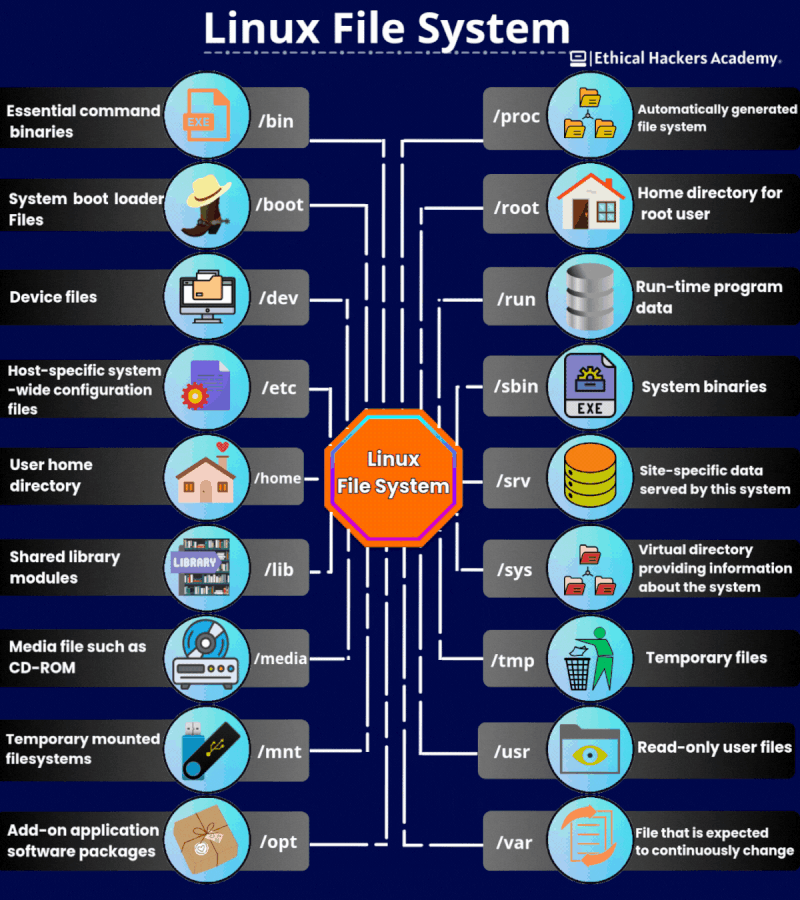
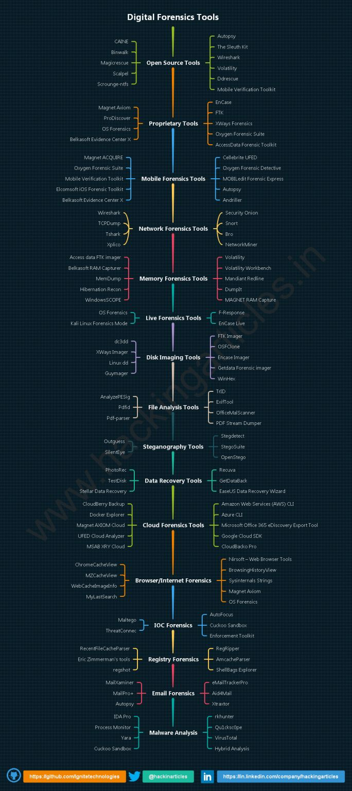
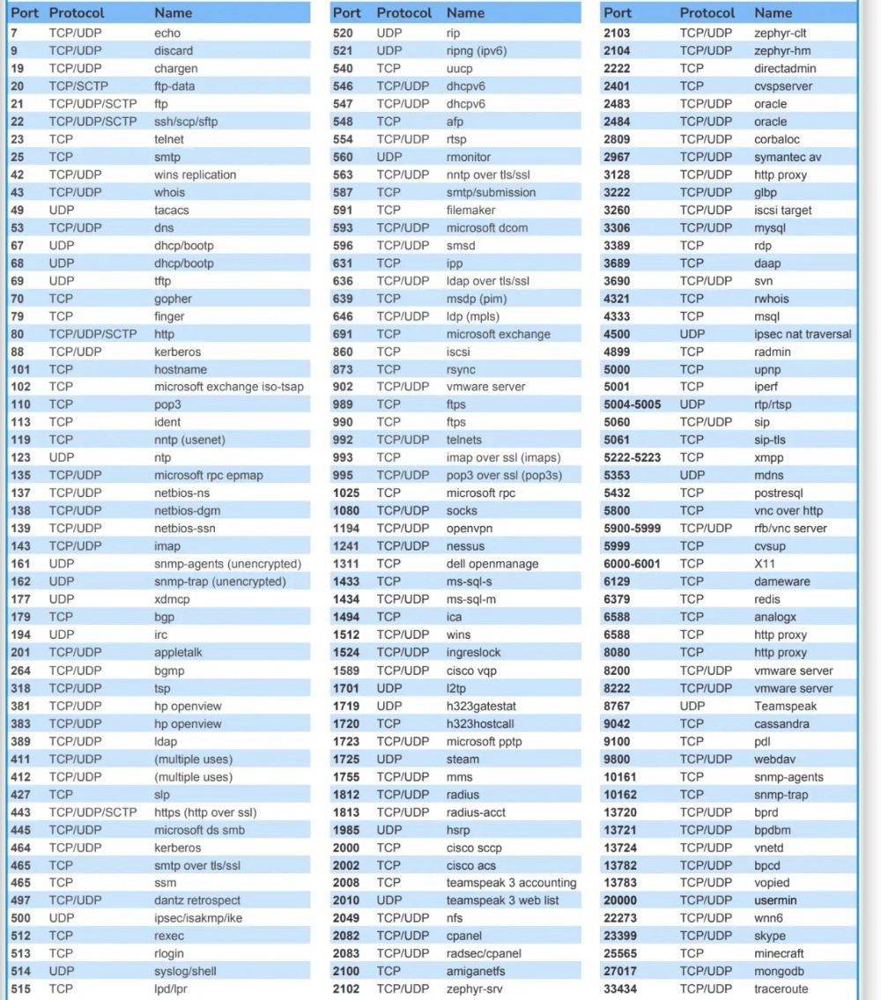

__General & Resources
General & Resources Link to heading
Tools Link to heading
Man Page Link to heading
man [command name]
search in the man page:
man ssh | grep -e "version number"
CVE Research Link to heading
- ExploitBD
- Exploit to be downloaded
- Linux: searchsploit
- NVD
- Keep all common CVE available
- CVE Mitre
- CVEDetails *CVE format: CVE-YEAR-IDNUMBER: e.g. CVE-2018-16763
Blog Link to heading
Resources Link to heading
- Github preset wordlists
- ffuf Command
- Hash cracker: crack the hash
Github Link to heading
__Cybersec Resources Link to heading
Useful Website Link to heading
-
VirusTotal: https://www.virustotal.com -For analyzing files and URLs
-
CVE (Common Vulnerabilities and Exposures): https://www.cve.mitre.org
- For identifying known vulnerabilities and threats.
-
WHOIS: https://lnkd.in/gMqJ-qvT -For investigating suspicious domains and identifying ownership.
-
Shodan: shodan.io
- For discovering exposed internet-connected devices.
-
AlienVault OTX: https://lnkd.in/gbFijfFZ -For sharing threat intelligence.
-
Nmap:https: //www.nmap.org -For network discovery and scanning.
-
Censys: https://www.censys.io -For monitoring and discovering vulnerable devices/services.
-
Exploit Database: https://www.exploit-db.com -For exploits and vulnerabilities/CVEs.
-
DNSDumpster: https://lnkd.in/gDMZx5WD -For domain research
-
OSINT Framework: https://lnkd.in/giwxHNaY -A collection of free tools!!!
-
Metasploit Framework (Community Edition): https://www.metasploit.com -For penetration testing
-
Iplocation: https://lnkd.in/gaQpGjwY -For IP address information
Linux File System Link to heading

Digital Forensics Link to heading

Port Number Link to heading
